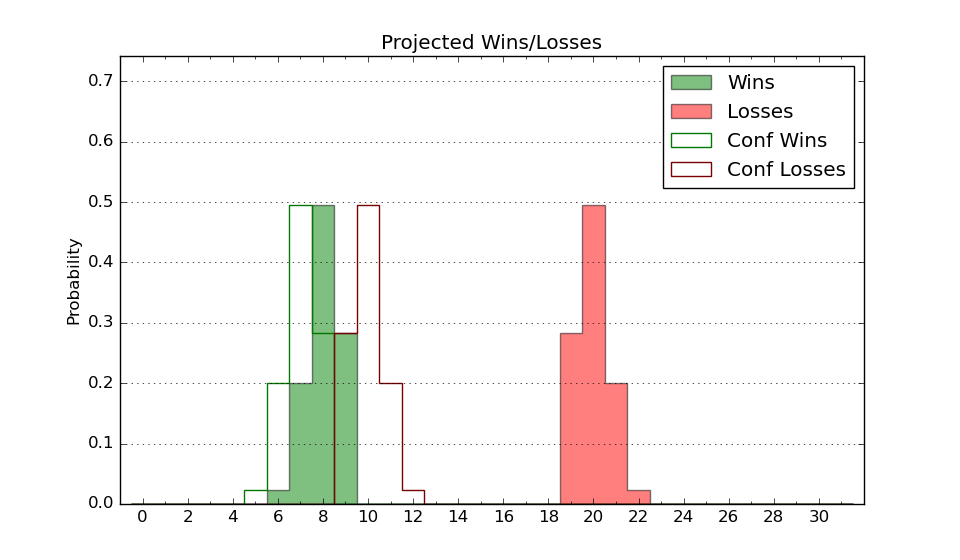

| Home | Game Probabilities | Conferences | Preseason Predictions | Odds Charts | NCAA Tournament |
| City: | Cookeville, Tennessee | |
| Conference: | Ohio Valley (7th)
| |
| Record: | 5-9 (Conf) 6-19 (Overall) | |
| Ratings: | Comp.: -5.9 (236th) Net: -5.8 (235th) Off: 101.0 (210th) Def: 106.8 (258th) SoR: 0.0 (160th) |
| Remaining | ||||||
|---|---|---|---|---|---|---|
| Date | Opponent | Win Prob | Pred. | |||
| 2/19 | @ Austin Peay (281) | 45.7% | L 68-69 | |||
| 2/24 | Tennessee St. (297) | 77.2% | W 76-68 | |||
| 2/26 | Tennessee Martin (306) | 79.5% | W 78-68 | |||
| Previous | Game Score | |||||
| Date | Opponent | Win Prob | Result | Off | Def | Net |
| 11/9 | @Memphis (32) | 4.9% | L 65-89 | 4.6 | -7.6 | -3.1 |
| 11/16 | @Chattanooga (63) | 7.6% | L 62-69 | 12.3 | 3.6 | 15.9 |
| 11/18 | (N) UNC Asheville (209) | 43.3% | L 55-61 | -27.1 | 22.4 | -4.7 |
| 11/23 | Lipscomb (278) | 73.7% | W 88-77 | 12.1 | -5.9 | 6.2 |
| 11/26 | @Tennessee (8) | 1.9% | L 69-80 | 16.2 | 5.4 | 21.6 |
| 11/30 | Chattanooga (63) | 22.0% | L 65-82 | -2.8 | -7.6 | -10.4 |
| 12/4 | @Evansville (308) | 53.5% | L 51-59 | -23.8 | 7.8 | -16.0 |
| 12/8 | @Western Carolina (292) | 48.5% | L 69-74 | -13.4 | 6.0 | -7.4 |
| 12/11 | Troy (175) | 53.0% | L 72-75 | 1.6 | -4.6 | -3.1 |
| 12/18 | @Wright St. (223) | 31.8% | L 63-72 | -16.4 | 12.3 | -4.1 |
| 12/21 | @Cincinnati (79) | 8.9% | L 67-76 | 5.5 | 4.8 | 10.3 |
| 1/13 | @Belmont (56) | 7.0% | L 77-92 | 9.4 | -1.8 | 7.5 |
| 1/15 | @Tennessee Martin (306) | 53.2% | W 76-70 | 0.3 | 10.8 | 11.1 |
| 1/17 | @Tennessee St. (297) | 49.9% | L 64-80 | -11.3 | -12.1 | -23.5 |
| 1/20 | SIU Edwardsville (282) | 74.8% | W 94-76 | 17.3 | -6.6 | 10.7 |
| 1/24 | @Murray St. (35) | 5.1% | L 53-79 | -12.3 | 1.4 | -10.9 |
| 1/27 | Murray St. (35) | 15.6% | L 75-80 | 11.9 | -4.7 | 7.3 |
| 1/29 | Austin Peay (281) | 74.1% | L 55-58 | -15.6 | 4.4 | -11.3 |
| 1/31 | Morehead St. (113) | 37.3% | L 56-70 | -18.0 | 7.0 | -11.0 |
| 2/3 | @Morehead St. (113) | 14.9% | L 68-75 | 1.8 | 5.2 | 7.1 |
| 2/5 | Belmont (56) | 20.4% | L 92-100 | 19.0 | -19.1 | -0.1 |
| 2/7 | Eastern Illinois (354) | 93.8% | W 84-58 | 23.2 | -7.1 | 16.2 |
| 2/10 | @Eastern Illinois (354) | 81.5% | W 73-62 | 11.1 | -12.0 | -0.9 |
| 2/12 | @SIU Edwardsville (282) | 46.6% | L 60-61 | -14.0 | 12.3 | -1.7 |
| 2/17 | Southeast Missouri St. (273) | 73.1% | W 98-94 | 7.7 | -11.8 | -4.1 |
| Stats & Trends | |||||
|---|---|---|---|---|---|
| Current | Day | Week | Month | Season | |
| Composite | -5.9 | +0.0 | +0.0 | +0.4 | +3.7 |
| Comp Rank | 236 | -- | +2 | +12 | +66 |
| Net Efficiency | -5.8 | +0.0 | -0.0 | -0.1 | -- |
| Net Rank | 235 | -- | +1 | -3 | -- |
| Off Efficiency | 101.0 | -0.0 | -0.1 | +3.4 | -- |
| Off Rank | 210 | -1 | -12 | +39 | -- |
| Def Efficiency | 106.8 | +0.0 | +0.1 | -3.5 | -- |
| Def Rank | 258 | -- | +7 | -61 | -- |
| SoS Rank | 159 | -- | -23 | -81 | -- |
| Exp. Wins | 8.0 | +0.0 | -0.1 | -0.0 | -3.2 |
| Exp. Conf Wins | 7.0 | +0.0 | -0.1 | -0.0 | -1.4 |
| Conf Champ Prob | 0.0 | -- | -- | -- | -1.8 |

| Advanced Stats | ||
|---|---|---|
| Stat | Value | Rank |
| Off Eff FG % | 0.492 | 211 |
| Off Ast Ratio | 0.157 | 83 |
| Off ORB% | 0.314 | 92 |
| Off TO Rate | 0.168 | 198 |
| Off FT Ratio | 0.224 | 345 |
| Def Eff FG % | 0.531 | 289 |
| Def Ast Ratio | 0.173 | 346 |
| Def ORB% | 0.310 | 280 |
| Def TO Rate | 0.165 | 160 |
| Def FT Ratio | 0.266 | 94 |